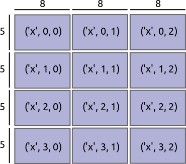

layout: true <div class="header-wrap"> <div class='logo-left'></div> <div class='title-warp'> <div class='title'>xarray: multi-dimensional data analysis in Python</div> <div class='authors'>Stephan Hoyer (1), Joe Hamman (2), Fabien Maussion (3) and Benoît Bovy (4)</div> <div class='affiliations'> (1) Google Research, Mountain View, CA, USA (2) NCAR, Boulder, CO, USA (3) University of Innsbruck, Austria (4) GFZ Potsdam, Germany </div> </div> <div class='logo-right'></div> </div> <div class="footer-logos"> <span>EGU Vienna 04-2017 (PICO)</span> </div> <div class="footer-wrap"> <ul> <li class='current-nav'>summary</li> <li>data structures</li> <li>data analytics</li> <li>plotting</li> <li>big data</li> <li>more features</li> <li>infos</li> </ul> </div> --- # What is xarray? .orange[For Python / Numpy users] - xarray handles N-dimensional arrays with labels (dimension names & coordinates) and metadata. .orange[For Python / Pandas users] - xarray is a powerful, pandas-like toolkit for analytics on multi-dimensional arrays. .orange[For scientists familar with the netCDF format] - xarray implements the netCDF data model with a high level Python API. .orange[For scientists working with big datasets] - xarray (with dask) supports efficient, out-of-core computing for datasets that don't fit in memory. --- # What is xarray? If you are dealing with data that... - is multi-dimensional ; - is labelled ; - has (lots of) metadata ; - is sometimes (very) large ; <img src="figs/dataset.png" style="margin: 20px 90px;" width="600px"/> ...then you may find xarray very useful! --- # xarray - Open source - Very good integration with other Python libraries for scientific computing (SciPy / PyData Stack) - Extensible - Documentation: http://xarray.pydata.org - Repository: https://github.com/pydata/xarray - 60 contributors (still growing) - Latest release: v0.9.2 (02.04.2017) - Umbrellas (no funding): Python for Data & NumFOCUS <img src="figs/pydata-logo.png" style="margin-left: 45px;" width="150px"/> <img src="figs/numfocus-logo.png" style="margin-left: 45px;" width="150px"/> --- layout: true <div class="header-wrap"> <div class='logo-left'></div> <div class='title-warp'> <div class='title'>xarray: multi-dimensional data analysis in Python</div> <div class='authors'>Stephan Hoyer (1), Joe Hamman (2), Fabien Maussion (3) and Benoît Bovy (4)</div> <div class='affiliations'> (1) Google Research, Mountain View, CA, USA (2) NCAR, Boulder, CO, USA (3) University of Innsbruck, Austria (4) GFZ Potsdam, Germany </div> </div> <div class='logo-right'></div> </div> <div class="footer-logos"> <span>EGU Vienna 04-2017 (PICO)</span> </div> <div class="footer-wrap"> <ul> <li>summary</li> <li class='current-nav'>data structures</li> <li>data analytics</li> <li>plotting</li> <li>big data</li> <li>more features</li> <li>infos</li> </ul> </div> --- # numpy.array ```python >>> import numpy as np >>> a = np.array([[1, 3, 9], [2, 8, 4]]) >>> a ``` ``` array([[1, 3, 9], [2, 8, 4]]) ``` ```python >>> a[1, 2] # get the value at 2nd row and 3rd column ``` ``` 4 ``` ```python >>> a.mean(axis=0) # compute the mean column-wise ``` ``` array([1.5, 5.5, 6.5]) ``` <br/> Not well supported by numpy: - array dimensions and indexes often have a meaning, e.g., latitude / longitude and their coordinates. --- # xarray.DataArray ```python >>> import xarray as xr >>> da = xr.DataArray(a, dims=['latitude', 'longitude'], coords={'longitude': [11, 12, 13], 'latitude': [1, 2]}) >>> da ``` ``` <xarray.DataArray (latitude: 2, longitude: 3)> array([[1, 3, 9], [2, 8, 4]]) Coordinates: * longitude (longitude) int64 11 12 13 * latitude (latitude) int64 1 2 ``` ```python >>> da.sel(longitude=13, latitude=2) # easier to work with coordinate values! ``` ``` <xarray.DataArray ()> array(4) Coordinates: longitude int64 13 latitude int64 2 ``` ```python >>> da.mean(dim='latitude') # easier to remember dimension names! ``` ``` <xarray.DataArray (longitude: 3)> array([ 1.5, 5.5, 6.5]) Coordinates: * longitude (longitude) int64 11 12 13 ``` --- # xarray.Dataset A collection of `xarray.DataArray`, a netCDF file... ```python >>> ds = xr.open_dataset('ERA-Interim-MonthlyAvg-TUVP.nc') >>> ds ``` ``` <xarray.Dataset> Dimensions: (latitude: 241, longitude: 480, time: 457) Coordinates: * longitude (longitude) float32 0.0 0.75 1.5 2.25 3.0 3.75 4.5 5.25 6.0 ... * latitude (latitude) float32 90.0 89.25 88.5 87.75 87.0 86.25 85.5 ... * time (time) datetime64[ns] 1979-01-01 1979-02-01 1979-03-01 ... Data variables: sp (time, latitude, longitude) float64 1.028e+05 1.028e+05 ... u10 (time, latitude, longitude) float64 -1.857 -1.854 -1.851 ... v10 (time, latitude, longitude) float64 -0.3266 -0.3056 -0.285 ... t2m (time, latitude, longitude) float64 242.7 242.7 242.7 242.7 ... Attributes: Conventions: CF-1.6 history: 2017-04-19 16:02:16 GMT by grib_to_netcdf-2.1.0: grib_to_ne... ``` --- layout: true <div class="header-wrap"> <div class='logo-left'></div> <div class='title-warp'> <div class='title'>xarray: multi-dimensional data analysis in Python</div> <div class='authors'>Stephan Hoyer (1), Joe Hamman (2), Fabien Maussion (3) and Benoît Bovy (4)</div> <div class='affiliations'> (1) Google Research, Mountain View, CA, USA (2) NCAR, Boulder, CO, USA (3) University of Innsbruck, Austria (4) GFZ Potsdam, Germany </div> </div> <div class='logo-right'></div> </div> <div class="footer-logos"> <span>EGU Vienna 04-2017 (PICO)</span> </div> <div class="footer-wrap"> <ul> <li>summary</li> <li>data structures</li> <li class='current-nav'>data analytics</li> <li>plotting</li> <li>big data</li> <li>more features</li> <li>infos</li> </ul> </div> --- # Analytics - Advanced selection ```python >>> # nearest neighbor lookup: no need to provide exact coordinate values >>> ds.sel(latitude=47.2876, longitude=11.3788, method='nearest') ``` ``` <xarray.Dataset> Dimensions: (time: 457) Coordinates: longitude float32 11.25 latitude float32 47.25 * time (time) datetime64[ns] 1979-01-01 1979-02-01 1979-03-01 ... Data variables: sp (time) float64 8.419e+04 8.41e+04 8.422e+04 8.441e+04 ... u10 (time) float64 0.8787 0.1095 0.7023 0.3623 0.3087 0.2992 ... v10 (time) float64 0.6971 0.5583 1.079 -0.04204 0.6298 -0.2448 ... t2m (time) float64 265.4 270.6 273.2 273.7 280.6 284.4 284.9 ... Attributes: Conventions: CF-1.6 history: 2017-04-19 16:02:16 GMT by grib_to_netcdf-2.1.0: grib_to_ne... ``` --- # Analytics - Aggregation ```python >>> global_avg = ds.mean(dim=['latitude', 'longitude']) >>> global_avg ``` ``` <xarray.Dataset> Dimensions: (time: 457) Coordinates: * time (time) datetime64[ns] 1979-01-01 1979-02-01 1979-03-01 ... Data variables: sp (time) float64 9.673e+04 9.667e+04 9.668e+04 9.67e+04 9.663e+04 ... u10 (time) float64 -0.1069 0.02902 -0.1717 -0.1011 0.001793 0.09216 ... v10 (time) float64 -0.2489 -0.0867 -0.1123 0.0739 0.1937 0.4532 ... t2m (time) float64 276.7 275.3 276.0 277.0 278.7 280.3 280.3 280.2 ... ``` --- # Analytics - Groupby (split-apply-combine) ```python >>> month_avg = ds.groupby('time.month').mean(dim='time') >>> month_avg ``` ``` <xarray.Dataset> Dimensions: (latitude: 241, longitude: 480, month: 12) Coordinates: * longitude (longitude) float32 0.0 0.75 1.5 2.25 3.0 3.75 4.5 5.25 6.0 ... * latitude (latitude) float32 90.0 89.25 88.5 87.75 87.0 86.25 85.5 ... * month (month) int64 1 2 3 4 5 6 7 8 9 10 11 12 Data variables: sp (month, latitude, longitude) float64 1.014e+05 1.014e+05 ... u10 (month, latitude, longitude) float64 -1.982 -1.987 -1.992 ... v10 (month, latitude, longitude) float64 -0.7036 -0.678 -0.6526 ... t2m (month, latitude, longitude) float64 246.1 246.1 246.1 246.1 ... ``` --- # Analytics - Arithmetic (broadcasting) ```python >>> time = xr.DataArray([0, 2, 4], dims='time', ... coords={'time': np.arange(3)}) >>> space = xr.DataArray([0, 1, 2, 3], dims='space', ... coords={'space': np.arange(4)}) >>> time + space ``` ``` <xarray.DataArray (time: 3, space: 4)> array([[0, 1, 2, 3], [2, 3, 4, 5], [4, 5, 6, 7]]) Coordinates: * time (time) int64 0 1 2 * space (space) int64 0 1 2 3 ``` <img src="figs/broadcast.png" style="margin: 20px 200px;" width="400px"/> --- # Analytics - Arithmetic (alignment) ```python >>> a = xr.DataArray([2, 3, 4, 1, 0, 5], dims='year', ... coords={'year': [2000, 2001, 2002, 2003, 2004, 2005]}) >>> b = xr.DataArray([3, 4, 2, 3, 1, 0, 3], dims='year', ... coords={'year': [2002, 2003, 2004, 2005, 2006, 2007, 2008]}) >>> a + b ``` ``` <xarray.DataArray (year: 4)> array([7, 5, 2, 8]) Coordinates: * year (year) int64 2002 2003 2004 2005 ``` <img src="figs/align.png" style="margin: 20px 200px;" width="300px"/> --- layout: true <div class="header-wrap"> <div class='logo-left'></div> <div class='title-warp'> <div class='title'>xarray: multi-dimensional data analysis in Python</div> <div class='authors'>Stephan Hoyer (1), Joe Hamman (2), Fabien Maussion (3) and Benoît Bovy (4)</div> <div class='affiliations'> (1) Google Research, Mountain View, CA, USA (2) NCAR, Boulder, CO, USA (3) University of Innsbruck, Austria (4) GFZ Potsdam, Germany </div> </div> <div class='logo-right'></div> </div> <div class="footer-logos"> <span>EGU Vienna 04-2017 (PICO)</span> </div> <div class="footer-wrap"> <ul> <li>summary</li> <li>data structures</li> <li>data analytics</li> <li class='current-nav'>plotting</li> <li>big data</li> <li>more features</li> <li>infos</li> </ul> </div> --- # Plotting ```python >>> # plot type, axis labels and colormap inferred from data / labels >>> global_avg.t2m.plot(figsize=(10, 5)) ``` --- # Plotting: maps ```python >>> import matplotlib.pyplot as plt >>> import cartopy.crs as ccrs >>> ax = plt.axes(projection=ccrs.Robinson()) >>> month_avg.t2m.sel(month=7).plot(ax=ax, transform=ccrs.PlateCarree()); >>> ax.coastlines(); ``` --- # Plotting: facet plots ```python >>> season_avg = ds.groupby('time.season').mean(dim='time') >>> p = season_avg.t2m.plot(x='longitude', y='latitude', col='season', ... col_wrap=2, transform=ccrs.PlateCarree(), ... subplot_kws={'projection': ccrs.PlateCarree()}) >>> for ax in p.axes.flat: ... ax.coastlines() ``` --- layout: true <div class="header-wrap"> <div class='logo-left'></div> <div class='title-warp'> <div class='title'>xarray: multi-dimensional data analysis in Python</div> <div class='authors'>Stephan Hoyer (1), Joe Hamman (2), Fabien Maussion (3) and Benoît Bovy (4)</div> <div class='affiliations'> (1) Google Research, Mountain View, CA, USA (2) NCAR, Boulder, CO, USA (3) University of Innsbruck, Austria (4) GFZ Potsdam, Germany </div> </div> <div class='logo-right'></div> </div> <div class="footer-logos"> <span>EGU Vienna 04-2017 (PICO)</span> </div> <div class="footer-wrap"> <ul> <li>summary</li> <li>data structures</li> <li>data analytics</li> <li>plotting</li> <li class='current-nav'>big data</li> <li>more features</li> <li>infos</li> </ul> </div> --- # Out-of-core computing - dask arrays: divide large arrays in smaller pieces ("chunks") fitting in memory ```python >>> # split the array into chunks of 100 elements on the time dimension >>> t2m_dask = ds.t2m.chunk({'time': 100}) >>> t2m_dask.data # returns a dask.array instead of a numpy.array ``` ``` dask.array<xarray-<this-array>, shape=(457, 241, 480), chunksize=(100, 241, 480)> ```  --- # Out-of-core computing - Lazy computation (deferred until requested) ```python >>> out = t2m_dask.mean(['latitude', 'longitude']) >>> out # no value computed yet (still a dask.array) ``` ``` <xarray.DataArray 't2m' (time: 457)> dask.array<mean_agg-aggregate, shape=(457,), dtype=float64, chunksize=(100,)> Coordinates: * time (time) datetime64[ns] 1979-01-01 1979-02-01 1979-03-01 ... ``` ```python >>> out.compute() # force triggering the computation (returns a numpy.array) ``` ``` <xarray.DataArray 't2m' (time: 457)> array([ 276.727663, 275.325389, 275.960077, ..., 278.9487 , 278.153185, 277.688196]) Coordinates: * time (time) datetime64[ns] 1979-01-01 1979-02-01 1979-03-01 ... ``` --- # Out-of-core computing - Computation graph (leverage multi-core processors) ```python >>> out.data.visualize() # show a graph of the deferred computations ... # (requires graphviz) ``` --- layout: true <div class="header-wrap"> <div class='logo-left'></div> <div class='title-warp'> <div class='title'>xarray: multi-dimensional data analysis in Python</div> <div class='authors'>Stephan Hoyer (1), Joe Hamman (2), Fabien Maussion (3) and Benoît Bovy (4)</div> <div class='affiliations'> (1) Google Research, Mountain View, CA, USA (2) NCAR, Boulder, CO, USA (3) University of Innsbruck, Austria (4) GFZ Potsdam, Germany </div> </div> <div class='logo-right'></div> </div> <div class="footer-logos"> <span>EGU Vienna 04-2017 (PICO)</span> </div> <div class="footer-wrap"> <ul> <li>summary</li> <li>data structures</li> <li>data analytics</li> <li>plotting</li> <li>big data</li> <li class='current-nav'>more features</li> <li>infos</li> </ul> </div> --- # More features... - Concatenate, merge & combine datasets - Open multiple files into a single `xarray.Dataset` - I/O backends: netCDF3/4, GRIB, HDF4... (external dependencies) - OPeNDAP support - Import/export from/to `pandas.DataFrame` or `pandas.Series` - Multi-index coordinates support (stack / unstack) --- layout: true <div class="header-wrap"> <div class='logo-left'></div> <div class='title-warp'> <div class='title'>xarray: multi-dimensional data analysis in Python</div> <div class='authors'>Stephan Hoyer (1), Joe Hamman (2), Fabien Maussion (3) and Benoît Bovy (4)</div> <div class='affiliations'> (1) Google Research, Mountain View, CA, USA (2) NCAR, Boulder, CO, USA (3) University of Innsbruck, Austria (4) GFZ Potsdam, Germany </div> </div> <div class='logo-right'></div> </div> <div class="footer-logos"> <span>EGU Vienna 04-2017 (PICO)</span> </div> <div class="footer-wrap"> <ul> <li>summary</li> <li>data structures</li> <li>data analytics</li> <li>plotting</li> <li>big data</li> <li>more features</li> <li class='current-nav'>infos</li> </ul> </div> --- # xarray - Open source - Very good integration with other Python libraries for scientific computing (SciPy / PyData Stack) - Extensible - Documentation: http://xarray.pydata.org - Repository: https://github.com/pydata/xarray - 60 contributors (still growing) - Latest release: v0.9.2 (02.04.2017) - Umbrellas (no funding): Python for Data & NumFOCUS <img src="figs/pydata-logo.png" style="margin-left: 45px;" width="150px"/> <img src="figs/numfocus-logo.png" style="margin-left: 45px;" width="150px"/>